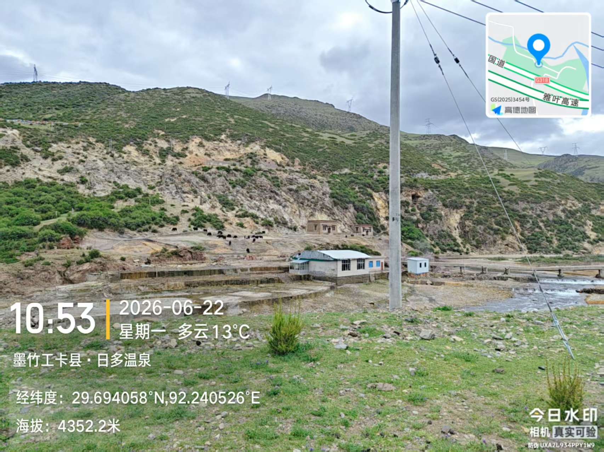

本次野外实习聚焦地理信息科学核心技能，在青藏高原东南缘开展自然环境观察与地理环境分析。
实习路线沿拉萨—林芝一线展开，涵盖了温泉、高山、湿地、沙丘、河流汇流与湖泊等多种地貌类型。

位于墨竹工卡县，地热资源丰富，通过观察日多乡自然环境，尤其是向南倾覆的逆冲断裂组合分析并掌握温泉的分布与地质构造之间的关系；观察山地植被类型；培养学生的因果分析能力。
地处尼洋河上游，参观并分析当地旅游资源状况，体会人与自然和谐共生的理念。
沿色季拉山盘山而上，观察垂直自然带谱变化；观察色季拉山山顶地形地貌特点；观察高山特有植物种类。
通过观察鲁朗林海的自然环境，尤其是观察森林中的各类树种，认识这些树种并加以分类，找出优势树种；从而掌握整个森林植物群落的形态结构；制作土壤剖面，分析土壤类型与结构。
通过实地观察，了解雅尼湿地作为雅鲁藏布江与尼洋河交汇处湿地的独特环境面貌，认识高海拔地区河流湿地的水文条件、植被类型和整体生态格局。
观察丹娘佛掌沙丘形态，分析丹娘佛掌沙丘形成原因
雅尼湿地尼洋河与雅鲁藏布江交汇处，邻近雅鲁藏布江缝合带。观察河口地貌；分析湿地主要植被类型。
通过参观了解喇嘛岭寺的历史和文化旅游资源状况，观察常见的植被类型
登临比日山，从高处直观感受林芝市区、尼洋河谷及周边山系的整体空间关系，理解城市选址与河流、地形之间的依存联系。观察植被类型从山麓到山顶的更替，体会高海拔地区植物群落的适应特征和自然分带规律。
通过观察巴松措及其周边冰川作用形成的地貌，分析地形与湖泊形成间的关系；总结巴松措这一堰塞湖的基本特征。培养学生的理论与实践相结合的能力。
📍 日多温泉 → 工布江达县加兴乡
📍 色季拉山 → 鲁朗镇
📍 雅尼湿地 → 佛掌沙丘 → 林芝市江河汇流
📍 喇嘛岭寺 → 比日山
📍 巴松措
用镜头记录野外数据采集过程与壮丽的高原景观。
这五天的野外之行，让我真正走出了课本。站在色季拉山的高处，看着云雾在脚下翻涌，那种壮阔是用任何文字都难以描述的。在巴松措的湖边，水清得能看见深处的石头，耳边只有风声和水鸟的鸣叫，那一刻觉得所有的疲惫都值了。以前觉得学习就是坐在教室里记东西，但这几天用双脚去走、用眼睛去看，才发现真实的世界远比想象中丰富。鲁朗的草甸像绿色绒毯，佛掌沙丘在河谷旁静静伫立，每一处风景都在诉说着自然的故事。
最难忘的是和同学们一起跋涉的时光。遇到陡坡互相拉一把，晚上围坐分享见闻，这些点滴让原本辛苦的实习变得温暖又充实。我明白了，很多知识不是老师讲一遍就能掌握的，必须亲手触摸、亲身体会，才能真正变成自己的东西。这次实习让我更热爱这片土地，也更懂得了坚持和合作的意义。
—— 2024级地理信息科学专业